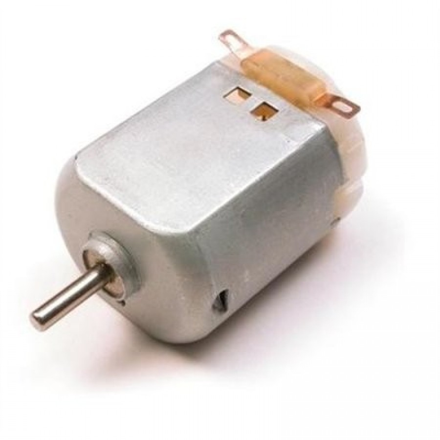
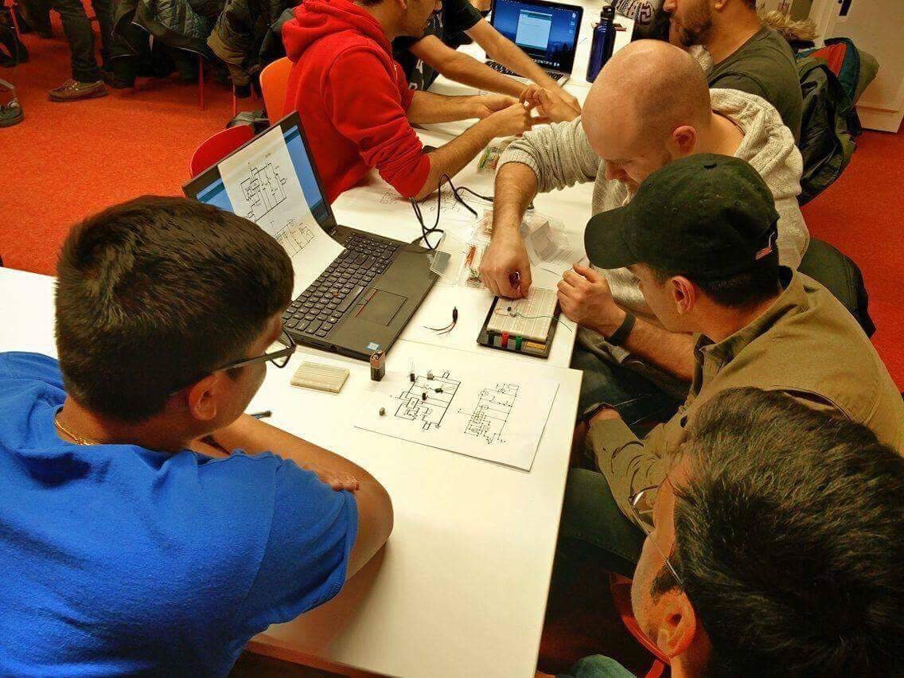

Engineering encompasses a passion to create the wealth in our society that connects us. The childish curiosity to push past our limits of knowledge challenges us. Ryerson Electronics Chapter creates a community inspiring us to have fun leveraging the theory from the lecture hall into DIY electronics projects.
REC is dedicated to promoting the engineering process of creating, developing, integrating, sharing, and applying knowledge about electrical and computer applications.
Weekly Drop-In workshops are designed to challenge participants of all skill levels, utilizing Raspberry Pi, Arduino, Github, Electronics, Signals, Embedded Programming, design and much more! As an attendee, you can expect to leave each workshop with a new and improved skill set.
Workshops
Schedule
Description
Objective: The objective of this very first workshop for the Fall 2017 semester was to introduce students to the basic fundamentals of Arduino and its applications.
Description: In this workshop, executive members gave a brief summary of different kinds of electronic parts that will be used from there on in the following workshops and then students were asked to create a traffic light system using the Arduino, a few LEDs, pushbuttons and a few other electronic components. Take a look below if you want to give it a go yourself!
Sources for DIY:
Arduino
Electronics
Code for Traffic Lights with or without Push Buttons
Circuit Schematic


Weekly Recap:
Objective: The objective of these two set of workshops were to teach students about how photo sensors and ultrasonic sensors worked.
Description: In this two week workshop, students were asked to measure the distance of an object placed away from the sensor using the ultrasonic sensors and Arduino. Resources used during the workshop are given below for you to try out at home!
Sources for DIY:
Arduino
BJT
pulsein()
HC-SR04 Link 1 and HC-SR04 Link 2
Code for measuring distance and much more (Part 1) and (Part 2)
Circuit Schematic


Weekly Recap:
Objective: The focus of this workshop was to introduce and teach students the applications of photoresistors and transistors, more specifically Bipolar Junction Transistors (BJTs).
Description: Transistors are everywhere around us, from using it as a switch to amplifying your everyday signals. Transistor level design which communicates with sensors is the future. In this workshop we asked students to utilize the BJTs and photoresistors to move the Arduino left or right.
Sources for DIY:
Arduino
BJT
Photoresistors
Analog Input Sample Code


Weekly Recap:
Objective: Many people wonder how DC Motors work and that was the main focus of the next two workshops. The objective was to teach students the basic fundamentals of DC Motors and their applications and also to introduce H-Bridge Circuits and the concept of Pulse Width Modulation (PWM).
Description: In this workshop we asked students to build their own H-Bridge and by utilizing pulse width modulation (PWM) within the Arduino microcontroller to try and change the direction and the speed of the DC Motor.
Sources for DIY:
Arduino
DC Motors
H-Bridge
PWM
How a DC Motor Works?
DC Motors and Universal Motors
DC Motor Speed Control using H-Bridge
Circuitry (Resistors: 4 x 330 Ohm, Transistors: 4 x 2N3904)




Weekly Recap:
Objective: The objective of this workshop was to pick from last week's workshop and continue teaching about DC Motors and ultimately get the H-Bridge to work with the DC Motor.
Description: In this workshop we continued to build the newly designed H-Bridges and utilized them to change the direction of the rotation of the DC Motor. Check out the links below to try it out yourself!
Sources for DIY:
Arduino
DC Motors
H-Bridge
PWM
DC Motor Speed Control using H-Bridge
Controlling DC Motors using Arduino and H-Bridge
Circuitry (Resistors: 4 x 330 Ohm, Transistors: 4 x 2N3904)


Weekly Recap:
Meet The Team

Bipin
PresidentBipin is a 3rd year Biomedical Engineering student. His research interests are where Quantum Mechanics and Biomedical Engineering converge. This includes Radiation Therapy Devices, Image Analysis and Tissue Engineering. In his free time, Bipin loves to take on personal projects, his most recent being an EEG! His goal is to bring a sense of community within Ryerson FEAS, empowering and inspiring students so they can all explore self directed learning through different lenses.
Fun Facts: He loves running, taking landscape photography, and KitKat!
Yanani
Chief Advancement OfficerYanani is a 4th year Computer Engineering student. She is excited and proud to be part of REC as a woman in engineering. She is really kind, friendly and happy to help anyone anytime. She is passionate about computer hardware. She is very involved in extra curricular activities at Ryerson and empowers female engineers, often acting as a mentor and a role model for them. She is interested in making indian song covers during her free time.
Fun Facts: She is responsible. In case engineering doesn't work out, she already has babysitting and corner of Dundas Square reserved for her amazing singing performances

Shahezad
Engineering Technical OfficerShahezad Kassam is a 3rd year Electrical Engineering student at Ryerson University. Typically working with Arduino, he creates and designs do-it-yourself projects with the microcontroller. In his free time, he enjoys sleep, playing games and just generally being a proud nerd.
Stephanie
Vice-PresidentStephanie is in her 3rd year of computer engineering. She loves working on small electronic and software projects on the side as well as teaching others about software and hardware. She enjoys problem solving and competitive programming. This is her second year involved with REC as Vice President and hopes it continues to be a success.
Fun Facts: In her spare time she loves to cook, read, play soccer and watch movies.
Reaz
Chief Visionary OfficerReaz Sabbir is a 4th year electrical engineering student. He is extremely passionate about electronics and competitive programming.
Fun Fact: He is the smartest one in the group.

Krieshan
Computer Innovation OfficerKrieshan is a 3rd year Computer Engineering Student at Ryerson University. His main interest in his field of study is Digital and Software Systems. He loves to play sports and play video games in his free time.
Fun Facts: His favorite sport is soccer and pizza is his number one go-to food.
Ketun
Web AdministratorKetun is a 3rd year computer engineering student. Although in computer engineering and keeping his main focus on software and logic techonologies, he has a keen interest in electronics and their applications.
Fun Fact: This is his first legitimate website that he has worked on!
Justin
Chief Operational OfficerJustin is a 4th year electrical engineering returning from my IIP where he was employed as a layout designer. His work there included designing analog and digital layouts for GPUs and CPUs. He enjoys playing around with microcontrollers, so if you have any questions about microcontrollers or electronics in general feel free to approach him. He would also love to help anyone out who is stuck on a personal electronics project.
Mehali
Chief Advancement OfficerMehali Mistry is a 4th year biomedical engineering student. Her interests lie in creating and developing biomedical devices, and is passionate about creating solutions to healthcare problems. She is currently working as a web application developer at St. Michaels and has in the past worked as a C++ developer. Her goal is to empower and inspire students to find their passions.
Fun Fact: Mehali loves sleeping!
Dhyey
Academic Enhancement OfficerDhyey is an Electrical Engineering student at Ryerson University currently on his PEY. He seeks to research/ work on the engineering aspects of computer architecture, power systems/ electronics and vehicular technology especially electric vehicles. He develops projects and ideas for students to work on ensuring that the workshops are challenging everyone to further develop their skills. He is very passionate about what he studies, and loves meeting new people.
Fun Facts: Dhyey loves cars, bikes and going out on adventures to explore natural locations
Gallery


